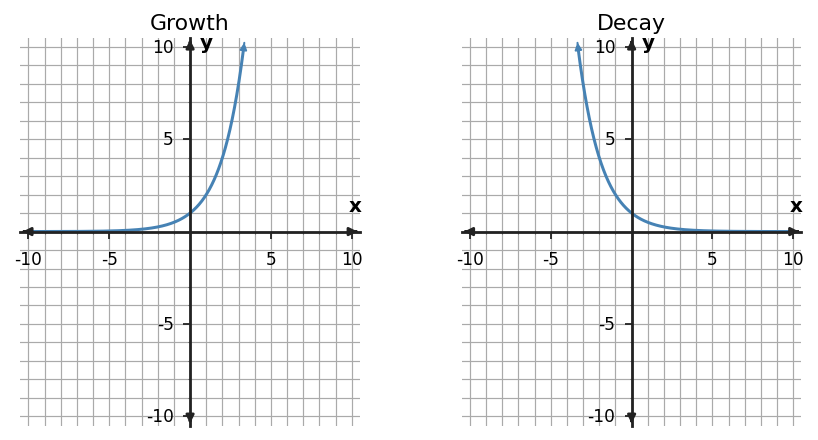

Algebra 1 · Unit 7 · Section 7.3 · Investigation
Exponential Graph Behavior Lab
Graphing and Analyzing Exponential Functions
Learning Target: Students will graph exponential functions and analyze key features.
Directions
- Work with a partner unless your teacher assigns a different grouping.
- Show the evidence you use, not only the final answer.
- When a representation changes, keep the meaning of the quantities attached to your work.
- Revise an answer if later evidence shows that your first claim was incomplete.
Part 1 · Growth vs Decay Graphs

| Feature | Growth graph | Decay graph |
|---|---|---|
| y-intercept | ||
| Increasing/decreasing | ||
| Long-run behavior | ||
| Domain | ||
| Range |
Part 2 · Equation to Key Points
For $y=3(2)^x$, generate values at $x=-1,0,1,2,3$. Plot or describe how these points explain the graph shape.
Part 3 · Asymptote Reasoning
Explain why $y=4(0.5)^x$ can get arbitrarily close to 0 without having an output of 0 for any real $x$.
Synthesis
List three graph features you would check before labeling an exponential graph growth or decay.